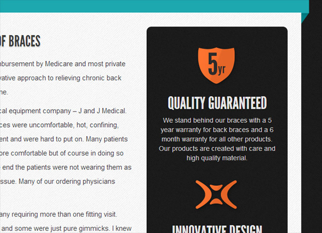

John Lusky
Interactive Developer/Designer. What can I do for you?
Links Work About Contact ExploreAbout

Born in the strange, humble town of Birdsboro, Pennsylvania, I began experimenting with web design and web development when I was 13 years old. I attended Philadelphia University in 2008, and I graduated as the top student in my major with a B.S. in Interactive Design and Media in 2012. I started working at 1 Trick Pony- an ad agency based out of Hammonton, New Jersey- a few days after graduation.
My current job is a full-time development gig (probably 90% front-end) and I’ve worked with several great clients such as American Express, Virgin Mobile, Sony Pictures Classics, Turner Classic Movies, and Hard Rock Hotels over the past two years. However, I do both development and design work for freelance clients on the side.
As far as other hobbies go, I dabble in photography and video, and I write for a gaming blog called Multitoad that I started with a friend. I also enjoy beer, filet mignon, and mozzarella sticks- probably in that order.
Currently Accepting New Clients
I’m currently accepting new freelance clients of all shapes and sizes. I’m available for both design and development of websites, email campaigns, applications, and more.
If you’re interested in getting kickass work for a reasonable price, get in touch now.
If you’d like a more comprehensive rundown of my skills and work experience, you can download my resume.
Work
- 
-

-

Xbackbrace.com - Design/Build
This was a full build that went through the planning, design, and development phases.
I built the site with a Wordpress content management system so the client could easilly add, modify, and delete products.
The Armstrong Lie - Build
1 Trick Pony project - Lead Developer
The Armstrong Lie was a documentary released by Sony Pictures Classics.


Hope for the Children - Design/Build
I did a full rebranding, site design, and build for Hope for the Children. They’re a non-profit organization that takes care of orphans in India. This was a static HTML build.
Xback E-Commerce
Powered by the Opencart platform, this online store was Xback’s foray into e-commerce.
I designed and built the Opencart theme, then I hooked up their Paypal account with it. I also trained an Xback employee to use the site by managing inventory, monitoring sales, and shipping out orders.
Contact
Contact Form
Contact